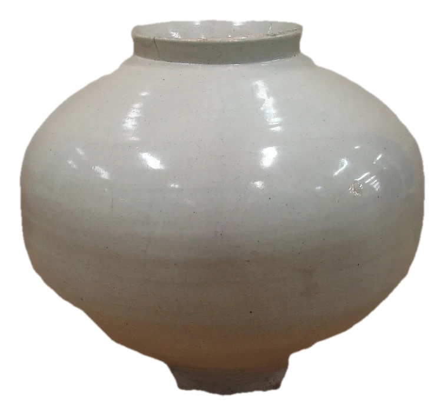

한 점의 유물에서 시작합니다
은은한 비색 위로 매화와 대나무가 흐르는 고려 청자 매병. 발견은 눈길이 머문 곳에서 시작됩니다.
ETRI × 건국대학교 · 문화유산 추천 연구
시대와 재질, 문양이 실처럼 이어집니다. 한 점의 유물에서 당신의 다음 유물까지, 연결과 그 이유를 보여 드립니다.
발견 시작하기
은은한 비색 위로 매화와 대나무가 흐르는 고려 청자 매병. 발견은 눈길이 머문 곳에서 시작됩니다.
고려라는 시간, 청자라는 빛, 매화라는 무늬. 지식그래프는 유물이 품은 속성을 따라 다른 유물과 이어집니다.
이어진 유물 가운데 지금 고른 유물과 가장 가까운 여섯 점을 찾고, 어떤 연결이 이유가 되었는지 함께 보여 줍니다.
유물을 고르면 진열장에 불이 켜집니다. 시대·재질·문양 표찰 가운데 하나를 누르면, 그 연결을 따라 찾은 여섯 점이 별자리처럼 펼쳐집니다.
표찰에 마우스를 올려 보고, 하나를 눌러 보세요.
표찰이나 아래 칩을 누르면 연결의 별자리가 켜집니다
고른 속성을 모두 갖춘 유물이 후보 안에 없습니다. 칩을 하나 빼 보세요.
굵은 막대는 관계, 그 아래는 관계 안의 속성입니다. 값은 추천 여섯 점의 설명 그래프 전체에서 합이 1이 되도록 맞춘 비중이며, 추천 확률이나 정확도가 아닙니다.
실제 학습 모델(RotatE 임베딩)이 기준 유물 5점 × 관심 이야기 5종마다 후보 유물 120점의 순위를 미리 매겨 두었습니다. 웹 모드 V1, 샘플링 끔(temperature 0)이라 같은 선택에는 늘 같은 결과가 나오며, 실시간 추론은 아닙니다.
속성 칩을 고르면 이 후보 가운데 같은 속성 안에서는 하나라도, 다른 속성끼리는 모두 갖춘 유물만 남기고 순위대로 여섯 점을 보여 줍니다. 해설 가중치(CAFE)는 화면의 여섯 점을 두고 원본 모델과 같은 식으로 다시 계산합니다. 관심 이야기와 고른 속성의 연결은 해설에서 5배의 무게를 받은 뒤 다시 정규화됩니다.
국립중앙박물관 소장품 0점을 실제 사진으로 만납니다. 사진을 누르면 크게 보고, 확대해 살필 수 있습니다.
ICTC 2026 · 논문과 포스터
문화유산 12,986점과 17종의 관계를 지식그래프로 엮었습니다. RotatE 임베딩으로 유물 사이의 가까움을 배우고, CAFE의 계층적 가중치로 어떤 연결이 추천의 이유인지 설명합니다.
시대, 재질, 분류처럼 어떤 관계가 이 추천에서 중요한지 먼저 잽니다.
그 관계 안에서 고려, 청자, 병처럼 어떤 값이 무게를 갖는지 나눕니다.
관람객이 고른 관심 이야기와 이어지는 연결에 더 큰 무게를 줍니다.
2026년 11월 12일 모델 스냅샷 기준
A Coarse-to-Fine Hierarchical Approach for Cultural Heritage RecommendationJinyoung Jung* · Junsu Kim* · Jiwon Lee · Hwijae Son†* 공동 제1저자 · † 교신저자 · ICTC 2026 논문 2쪽